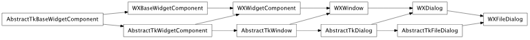

Bases: enaml.components.dialog.Dialog
A dialog widget that allows the user to open/save files.
The mode of the dialog: ‘open’ or ‘save’
Whether to allow selecting multiple files in ‘open’ mode.
The current directory of the file dialog.
The file selected in the dialog.
A read-only property which returns the full path to the file, or the first file in the selection if multi_select is True.
A read-only property which returns a list of selected paths.
The string filters used to restrict the set of files.
The selected filter from the list of filters.
Overridden parent class trait
An overriden parent class method which prevents subcomponents from being declared for a FileDialog instance.
alias of __NoInterface__
Bases: enaml.backends.qt.qt_dialog.QtDialog, enaml.components.file_dialog.AbstractTkFileDialog
A Qt4 implementation of a FileDialog.
Update the dialog for the given multi select behavior.

Bases: enaml.backends.wx.wx_dialog.WXDialog, enaml.components.file_dialog.AbstractTkFileDialog
A Wx implementation of a FileDialog.
Update the dialog for the given multi select behavior.